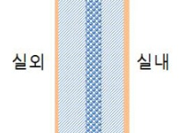

단열 시공방법은 단열재 위치에 따라 실내온도와 구조체 내부의 온도가 달라지며 내단열, 외단열, 중간단열로 구분됩니다.
● 내단열
내단열 단면도 |
단열재를 벽체의 실내에 설치하고 보드 등으로 내부 마감하는 공법으로서, 시공이 간편하고 공사비가 저렴하지만 기둥, 보, 슬래브내부에 결로가 발생할 수 있습니다. |
● 외단열
외단열 단면도 |
외벽의 외부에 단열재를 부착하고 내수성과 내충격성이 있는 자재로 마감하여, 단열성능을 높이고 열교현상(*)의 발생을 낮추는 공법으로서 구조체의 열화를 방지합니다. (*)열교현상: 외벽, 바닥, 지붕 등의 건축물 부위에 단열이 연속되지 않는 부분을 통해 열의 출입이 발생하는 현상 |
● 중간단열
|  중간단열 단면도 |
외벽의 시멘트 벽돌 공간 쌓기 내부에 스티로폴 등의 충진재를 충진하는 공법으로서, 국내 대부분의 주거용 건물에 시공하고 있기 때문에 시공법이 일반화되어 있습니다. |
준불연 가등급 EPS 단열재 DK보드
건축용 / 드라이비트용 / 판넬용
문의 1855-2240